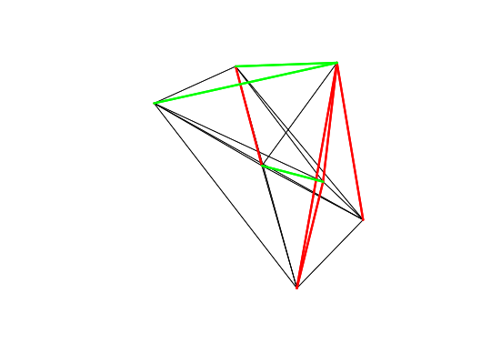

This function was designed to find lines that are close to parallel and perpendicular to some pre-defined route. It can return results that are absolute (contain information on the direction of turn, i.e. + or - values for clockwise/anticlockwise), bidirectional (which mean values greater than +/- 90 are impossible).
angle_diff(l, angle, bidirectional = FALSE, absolute = TRUE)
| l | A SpatialLinesDataFrame |
|---|---|
| angle | an angle in degrees relative to North, with 90 being East and -90 being West. (direction of rotation is ignored). |
| bidirectional | Should the result be returned in a bidirectional format? Default is FALSE. If TRUE, the same line in the oposite direction would have the same bearing |
| absolute | If TRUE (the default) only positive values can be returned |
Building on the convention used in bearing and in many applications,
North is definied as 0, East as 90 and West as -90.
data(flowlines) # Find all routes going North-South a = angle_diff(flowlines, angle = 0, bidirectional = TRUE, absolute = TRUE) plot(flowlines)plot(flowlines[a < 15,], add = TRUE, lwd = 3, col = "red")# East-West plot(flowlines[a > 75,], add = TRUE, lwd = 3, col = "green")